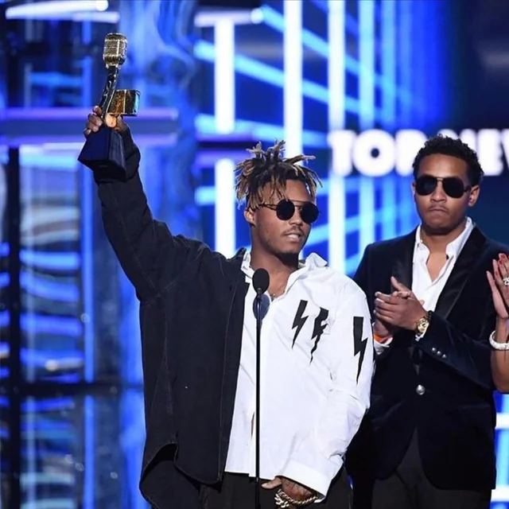
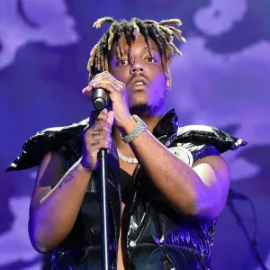
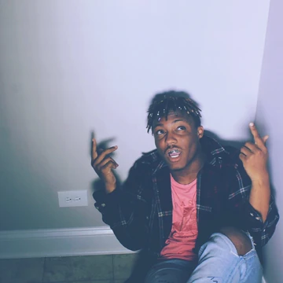

Juice WRLD Gallery
Explore Juice WRLD's journey through these images, capturing moments from his early life, career highlights, and unforgettable performances.
Goodbye & Good Riddance: Juice WRLD's breakthrough album that introduced his raw emotional style.

Death Race for Love: An introspective journey that showcased Juice WRLD's evolution in sound.

Legends Never Die: An album filled with Juice WRLD's heartfelt messages to his fans.

Award-Winning Juice WRLD: Celebrating his recognition and influence in the music Industry. In this photo Juice WRLD received the 2019 Billboard Music Award for: Top New Artist.
Live Performance: A powerful moment of Juice WRLD connecting with his Fans during a live show. Here he sang an alternate version of the song Robbery. He altered the last few lyrics when his Girlfriend Ally came on stage.
Where Juice WRLD Started: A look at who Jarad Higgins was before becoming Juice WRLD. He began his music career in 2015 by posting recordings to SoundCloud. He started taking piano lessons at the age of 5 and quickly learned to play other instruments. In 2017 he released his first EP, called Juice WRLD 999, on Sound SoundCloud.
